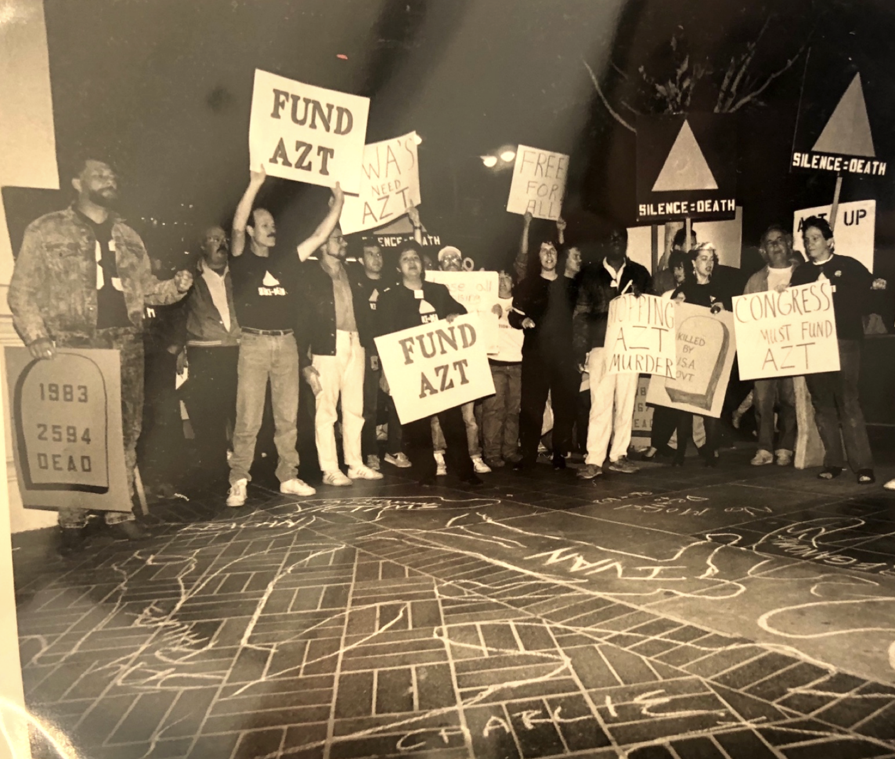
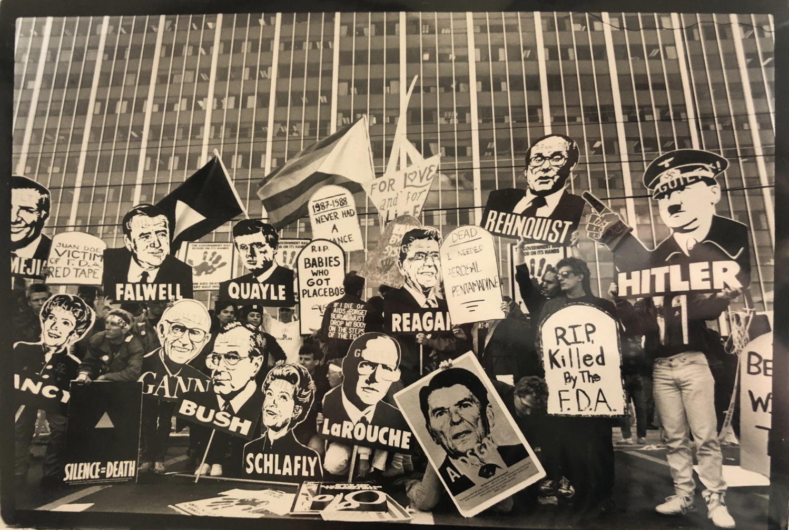
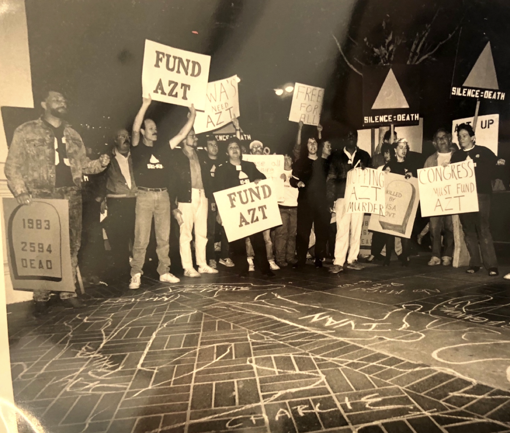
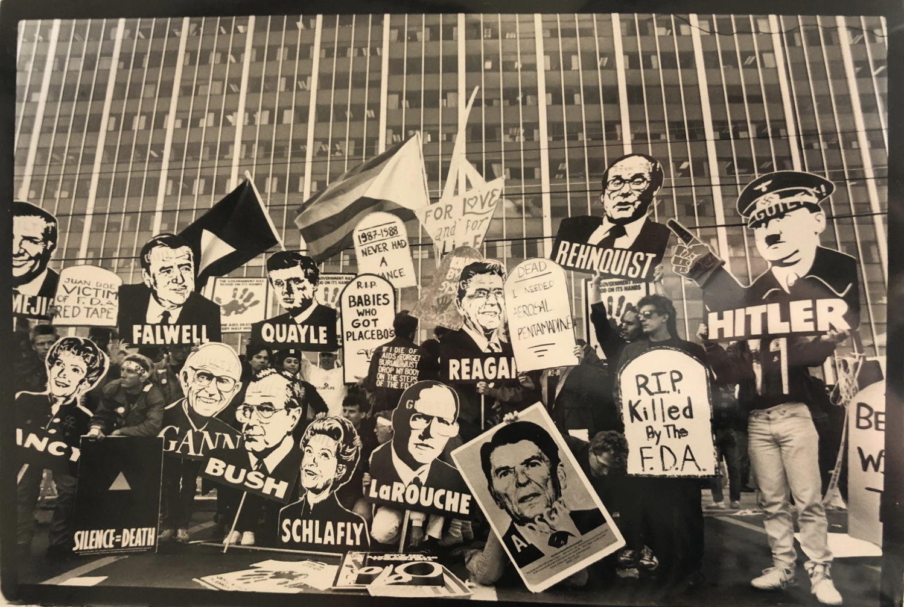

Photos of ACT UP
All of these photos were taken of ACT UP/LA in January-November 1988. They show some examples of actions the group took to try to bring attention to the AIDS epidemic.
 



Ronald Reagan: President of the USA, 1981-1989
Nancy Reagan: First lady of the USA, 1981-1989
George Bush: Vice president to Ronald Reagan; elected president in November 1988 election and served as president from 1989-1993
Dan Quayle: Vice presidential running mate of George Bush; elected as vice president in November 1988
Phyllis Schlafly: Anti-feminist and anti-gay conservative, Republican activist
William Rehnquist: Supreme Court justice
Lyndon LaRouche: Democratic politician, activist; supported the (false) idea that AIDS could be spread like a cold virus and through insects
Paul Gann: Conservative political activist, contracted AIDS from a blood transfusion in 1987 and advocated to “require doctors to report to state health officials the names and addresses of those carrying the AIDS virus or those they 'reasonably believe’ might be infected.
Citation: Three Photographs of ACT UP/LA protests, 1988